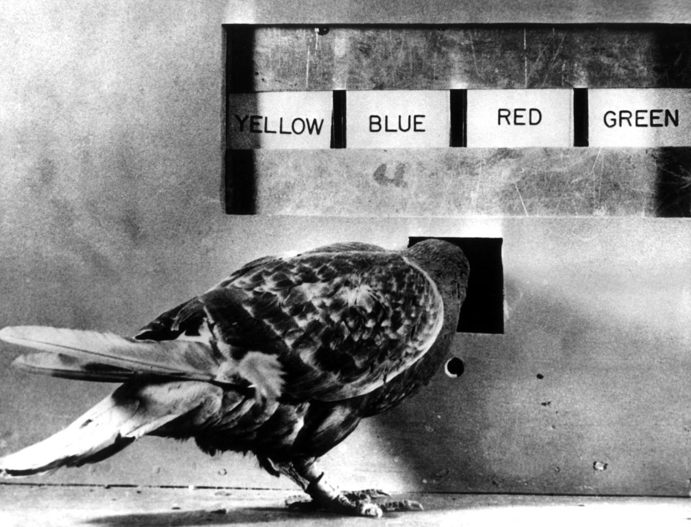
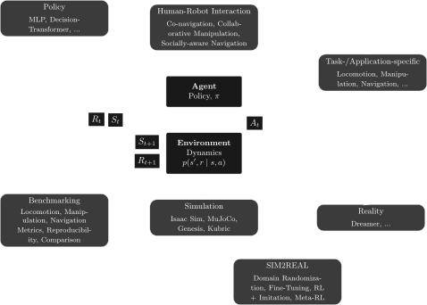

Einsatz von Reinforcement Learning für die Steuerung mobiler Roboter in der Logistik
Inhalt
- Was ist Reinforcement Learning?
- Reinforcement Learning bei mobilen Robotern
- Aktuelle Themen
- Wie lange braucht man um laufen zu lernen?
Was ist Reinforcement Learning?

- operante Konditionierung
- "Programmiertes Lernen"
- "Reinforcement Learning"
Was ist Reinforcement Learning?
Markov Decision Process

mit State \(S_t\), Action \(A_t\) und Reward \(R_t\),
sodass \[S_0, A_0, R_1, S_1, A_1, R_2, S_2, A_2, R_3, ..., R_T\]
Reward…
Reward = Gewinn \(\Rightarrow\) MAXIMIEREN!
\(G_t=R_{t+1}+R_{t+2}+ R_{t+3}+ ... + R_{T}\)
… was könnte wohl schief gehen?

RL bei Robotern
RL bei Robotern

Fragestellungen
- Abbildung der Umgebung
- Grenze zwischen Agent und Umgebung
- Implementation im Framework
- Simulation der Umgebung
- Beschreibung der Aufgabe/-n
- als einzelnes numerisches Signal
- Architekturen
- Multi-Agenten Systeme
- Hierarchisches Reinforcement Learning
- Agenten-Architektur (MLP, CNN, Transformer)
Aktuelle Themen
- Reinforcement Learning im Allgemeinen
- Konzepte/Frameworks
- Implementation
- Benchmarking
- Überführung in die Realität "SIM2REAL"
- Implementation in ROS
Reinforcement Learning Allgemein
Unterschied zu anderen Reglern?
Reward Funktion
- Konstruktion der Funktion
- Einfluss der Funktion auf das Training
SIM2REAL
Mehrere Fragestellungen:
- RL auf realen Systemen
- Implementation in ROS
- am Beispiel des TurtleBot4
sim…
…2real
Digitaler Zwilling
… eines Roboterarms
… eines Roboterarms
Live Demo
… eines mobilen Roboters
Live Demo
Laufen lernen
Wie lange braucht man um laufen zu lernen?
einfacher Fall
einfacher Fall
################################################################################
Learning iteration 400/401
Computation: 199913 steps/s (collection: 0.255s, learning 0.236s)
Value function loss: 0.0000
Surrogate loss: 0.0030
Mean action noise std: 0.15
Mean total reward: 21.26
Mean episode length: 1001.00
Mean episode rew_tracking_lin_vel: 0.9888
Mean episode rew_tracking_ang_vel: 0.1983
Mean episode rew_lin_vel_z: -0.0067
Mean episode rew_base_height: -0.0049
Mean episode rew_action_rate: -0.0118
Mean episode rew_similar_to_default: -0.1005
--------------------------------------------------------------------------------
Total timesteps: 39419904
Iteration time: 0.49s
Total time: 209.38s
ETA: 0.5s
komplexer Fall
komplexer Fall
╒═════════════════════════════════════════════════════╤════════════════════╕
│ train/episode/rew tracking lin vel/mean │ 13.591 │
├─────────────────────────────────────────────────────┼────────────────────┤
│ train/episode/rew tracking ang vel/mean │ 5.35 │
├─────────────────────────────────────────────────────┼────────────────────┤
............................................................................
├─────────────────────────────────────────────────────┼────────────────────┤
│ train/episode/rew orientation control/mean │ -2.868 │
├─────────────────────────────────────────────────────┼────────────────────┤
│ train/episode/rew total/mean │ 4.42 │
├─────────────────────────────────────────────────────┼────────────────────┤
............................................................................
├─────────────────────────────────────────────────────┼────────────────────┤
│ time elapsed/mean │ 118538.365 │
├─────────────────────────────────────────────────────┼────────────────────┤
│ time iter/mean │ 5.207 │
├─────────────────────────────────────────────────────┼────────────────────┤
............................................................................
├─────────────────────────────────────────────────────┼────────────────────┤
│ timesteps │ 3262531200 │
├─────────────────────────────────────────────────────┼────────────────────┤
│ iterations │ 19990 │
╘═════════════════════════════════════════════════════╧════════════════════╛
Vielen Dank für Ihre Aufmerksamkeit
Vielen Dank für Ihre Aufmerksamkeit
Eric Plaß, FING, Nieper-Bau N108